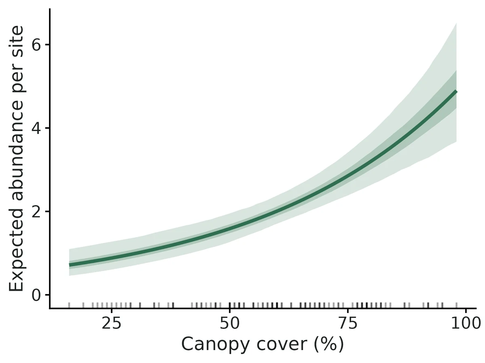
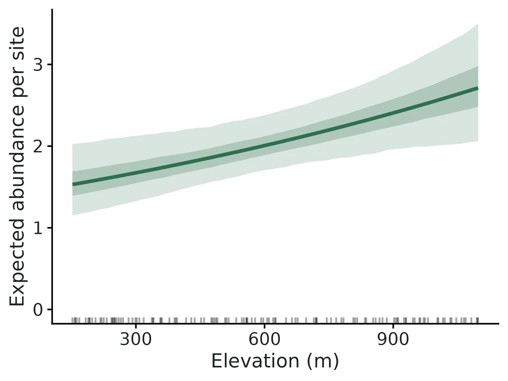
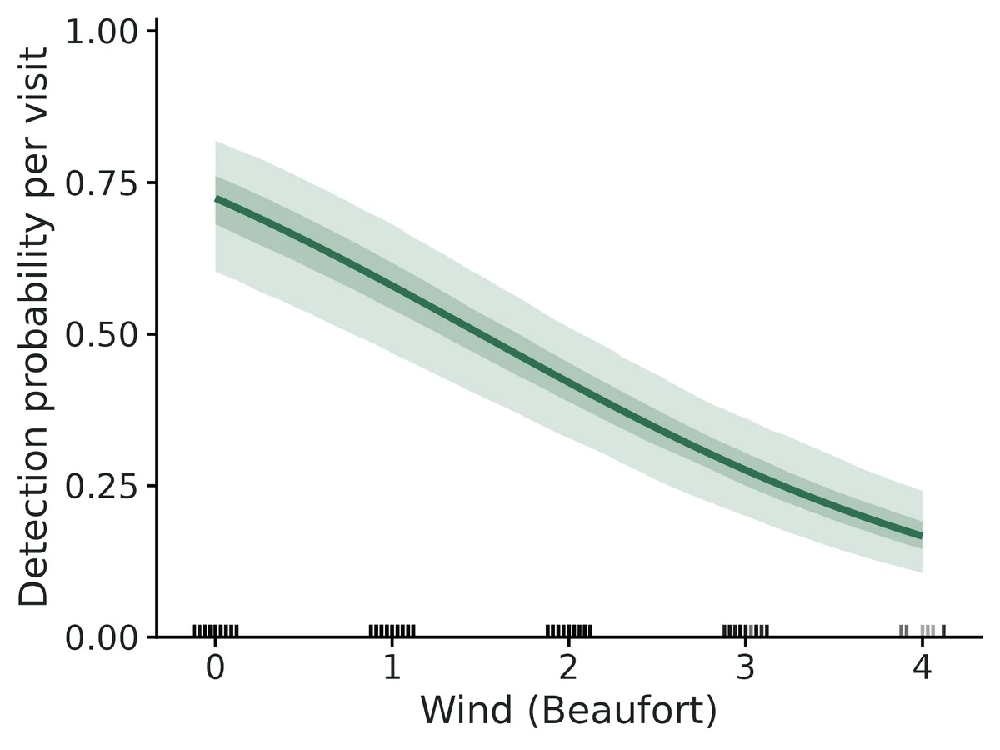
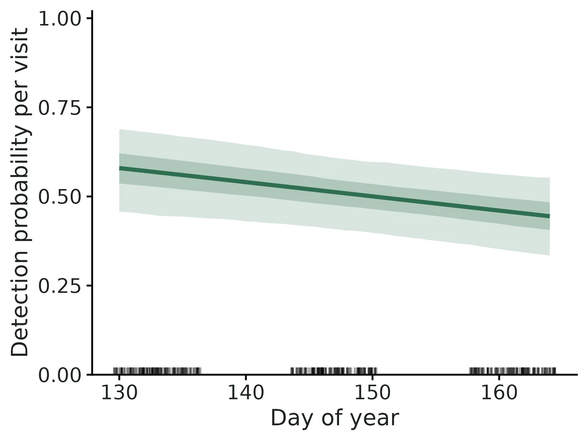

N-mixture models for repeated counts (closed and open)
"How many animals are at my sites, how does abundance change with habitat, and how much do my counts underestimate it?" From repeated counts at many sites the binomial N-mixture model (Royle 2004) separates two things the raw counts mix together: the number of animals present at each site (abundance, N) and the chance that each animal is counted on a visit (detection, p).
Is this the right analysis?
Use it when
The same sites (points, plots, transects, stream reaches) were counted two or more times within a period when the number of animals there did not change; the question is how many animals there are and what habitat or survey conditions are associated with abundance, allowing for animals that were present but not counted. With several seasons/years of such counts, the dynamic (Dail-Madsen) version estimates recruitment, apparent survival and the abundance trajectory.
Not for
Detection/non-detection only (use occu-single); individually identified animals (use scr, cjs or closed capture-recapture, which give far more reliable absolute abundance); single counts per site (no repeat visits, so detection cannot be separated from abundance; use a Poisson/NB GLM (glm module) for a relative index); counts where animals move freely in and out between visits (closure fails); distance-sampling data (use distance).
The data you need
Counts per site per visit (long CSV, one row per visit, or wide site x visit table), site covariates (one row per site), optional visit covariates (wind, date, observer, effort); for the dynamic model also a season/year column and optional site-by-season covariates.
What the example's main data file looks like:
| point | visit | date | julian_day | start_time | wind_beaufort | observer | count |
|---|---|---|---|---|---|---|---|
| PT-001 | 1 | 2025-05-13 | 133 | 06:15 | 1 | SAT | 1 |
| PT-001 | 2 | 2025-05-26 | 146 | 07:00 | 1 | SAT | 0 |
| PT-001 | 3 | 2025-06-11 | 162 | 05:30 | 2 | MLR | 0 |
| PT-002 | 1 | 2025-05-10 | 130 | 05:45 | 3 | SAT | 2 |
| PT-002 | 2 | 2025-05-29 | 149 | 06:45 | 0 | SAT | 3 |
Not sure? Use the finder to compare modules.
The worked example
Hermit warbler abundance from repeated point counts (static binomial N-mixture model)
The question: How many Hermit warblers are at 120 Coast Range survey points, allowing for birds present but not counted, and is abundance associated with canopy cover and elevation?
The data are simulated, so the true answer is known and the analysis can be checked against it.
What the researcher typed
I have Hermit warbler point counts from 120 points, each visited up to 3 times between mid-May and mid-June. The counts are in point_counts.csv (one row per visit, with wind, day of year and observer). The habitat for each point is in points.csv (canopy cover and elevation). Please estimate how many warblers there are, allowing for birds we missed, and tell me whether abundance is related to canopy cover and elevation.
Run it yourself
Download the example data below and unzip it.
Open the unzipped folder in Claude Code (see Install).
Paste the prompt above. The agent checks the files, writes a plan, runs planted truth, fits the model and writes the report. You can compare your results with the ones below.
Contains point_counts.csv, points.csv, the settings file (config.yaml), a description of the data and a step-by-step walkthrough.
Study design details
| n sites | 120 |
|---|---|
| n visits | 3 |
| visits done | 346 |
| prop missing | 0.039 |
| observers | 3 |
| abundance dist | Poisson |
| model | static (closed) N-mixture |
| engine | unmarked::pcount (maximum likelihood) |
Results from the example data

What this means
- At a site with average covariate values the model expects 2.00 (95% CI 1.69 to 2.38) Hermit warblers.
- Summed over the 120 surveyed sites, estimated abundance is 272 (95% CI 244 to 308) (an average of 2.26 (95% CI 2.03 to 2.57) per site).
- The sum of the largest count at each site was 217, so the model infers that about 20% of the animals present were missed even on the visit with the highest count.
- Each increase of 1 SD (19.74 units) in Canopy cover is associated with expected abundance being multiplied by 1.59 (95% CI 1.37 to 1.84), i.e. +59% (95% CI +37% to +84%).
- Across the observed range (16.00 to 98.00) expected abundance per site goes from 0.71 to 4.90, other covariates held at their mean.
- Each increase of 1 SD (293.79 units) in Elevation is associated with expected abundance being multiplied by 1.19 (95% CI 1.05 to 1.36), i.e. +19% (95% CI +5% to +36%).
- Detection: on a visit with average covariate values (Observer 'JDK') each animal present had a 0.51 (95% CI 0.41 to 0.61) probability of being counted; over 3 such visits the probability of counting an animal at least once is 0.89 (0.80 to 0.94).
- Each increase of 1 SD (1.10 units) in Wind multiplies the odds of detecting an animal by 0.49 (95% CI 0.40 to 0.60).
- Model fit: no significant lack of fit at the 5% level, but the p-value is borderline (c-hat 1.17, smaller of the chi-square and Freeman-Tukey p-values = 0.06).
- Relative differences among sites and covariate effects (rate ratios) are more robust than the absolute totals. All covariate relationships are associations, not demonstrated causes.
More figures



Figures are the module's default publication figures, reduced for the web. The report also saves them as PDF and full-resolution PNG.
Planted truth at the example's design
Before trusting the example's results, the module was run on many simulated data sets with the same design and known true values. Each row is one quantity: did the method get it back? (What the thresholds are.)
Every quantity checked passed planted truth at this design.
| This example | 120 point-count stations, up to 3 visits each, detection about 0.55 |
|---|---|
| Design the module was validated at | 150 sites, 3 visits, detection 0.5 |
The example has somewhat fewer sites than the validated default (120 vs 150), with similar visits and detection. VALIDATION.md's power runs showed total abundance biased upward by +3.9% at 100 sites and +2.1% at 150, and at the example's own design all quantities passed (total abundance +1.9%, coverage 0.985). The module's documented failure is low detection (about 0.2) with few visits, which does not apply here.
8 of 8 rows pass.
| Quantity | True value | Average estimate | Bias | Allowed bias | Coverage (needed) | Result |
|---|---|---|---|---|---|---|
| abundance_at_average_site | 2.1 | 2.12 | +0.8% | ±10.0% | 0.95 (0.904) | ✓ PASS |
| detection_prob | 0.553 | 0.549 | -0.7% | ±10.0% | 0.96 (0.904) | ✓ PASS |
| lambda_beta_forest | 0.434 | 0.433 | -0.3% | ±10.0% | 0.96 (0.904) | ✓ PASS |
| mean_abundance_per_site | 2.31 | 2.35 | +1.9% | ±10.0% | 0.98 (0.904) | ✓ PASS |
| odds_ratio_detection_wind | 0.609 | 0.608 | -0.1% | ±10.0% | 0.97 (0.904) | ✓ PASS |
| p_beta_wind | -0.496 | -0.501 | -1.0% | ±10.0% | 0.97 (0.904) | ✓ PASS |
| rate_ratio_forest | 1.54 | 1.54 | +0.1% | ±10.0% | 0.96 (0.904) | ✓ PASS |
| total_abundance | 276.7 | 281.9 | +1.9% | ±10.0% | 0.98 (0.904) | ✓ PASS |
Limits that matter
- Absolute N assumes closure, no double counting and independent detection; double counting and closure violations were not validated and GOF rarely detects them (VALIDATION.md limit 4).
- Unmodelled detection heterogeneity biases N downward with overconfident intervals; strong site-level heterogeneity is flagged by GOF 95% of the time, individual-level heterogeneity was not tested. GOF p = 0.06 here is borderline (limit 2).
- Overdispersed abundance fitted as Poisson biases N by about -20%; here AIC favoured Poisson and NB/ZIP gave the same abundance (limit 3).
- Low detection (p ~0.2) with few visits biases absolute N; this design (p ~0.5, 3 visits) passed recovery (limit 1).
- Recovery used fast settings and one covariate per submodel; elevation, day-of-year and observer effects were checked only against this example's known truth (limit 8).
- In this one data set two detection intervals miss the truth (wind OR 0.49 [0.40, 0.60] vs 0.61; observer MLR OR 1.57 [1.03, 2.40] vs 1.00), each about 2 SE off; recovery coverage for wind was 0.97, so this is sampling chance, but single detection covariates should be read cautiously.
All known limits from the module's validation record
- Absolute N under low detection and few visits. p 0.2 with 2 visits fails badly (+157%); with 3 visits, +14-25% bias. Effects remain reliable. The convergence flag (SE > 5) does not catch these weakly identified fits; look at the CI width and the K-sensitivity note instead.
- Unmodelled detection heterogeneity biases N downward and gives overconfident intervals (negative control 1). Strong site-level heterogeneity is flagged by the GOF test 95% of the time. Individual-level heterogeneity was not tested and is expected to be harder to detect.
- Overdispersed abundance fitted as Poisson (negative control 2) biases N by -20%. The module reports the AIC comparison of P/NB/ZIP and a bootstrap GOF; use them.
- Double counting and closure violations are not validated by recovery here. The simulator has a
double_count_probknob but it is not part of the gate. The literature says GOF rarely detects these violations (Link et al. 2018). - NB mixture identifiability: about 25% of real bird datasets give unbounded N under NB (Kéry 2018). The module raises K up to 2000 and adds a note when the tail still truncates; the result should then be treated as non-identifiable.
- Small samples: total N biased +8-13% at 30-60 sites (power run).
- Dynamic model: only constant/notrend dynamics with Poisson/NB/ZIP initial abundance; no trend/autoregressive dynamics, no immigration term, and no Bayesian engine. Validated only at 100 sites x 5 seasons with p 0.5.
- Recovery used the fast settings (GOF, K-sensitivity, mixture comparison switched off). Those options were exercised in the example fits and the GOF study only.
How this module was validated
- 200 simulated data sets (100 for some variants) fitted with unmarked; the default Poisson design passed all 8 quantities, and negative binomial, zero-inflated, dynamic and Nimble-engine designs also passed.
- Harder designs with detection 0.2 failed on absolute abundance (+157% with 2 visits, +14% to +25% with 3 visits), while covariate effects stayed unbiased.
- Negative controls: unmodelled detection heterogeneity (total N -12.3%) and overdispersed abundance fitted as Poisson (total N -20.1%) both failed; with no true effects, false-positive rates were 0.055 and 0.045.
- Cross-checks: unmarked, a hand-written likelihood and Nimble agreed (log-likelihoods identical, estimates within 1e-4); the goodness-of-fit test caught both strong violations 93-100% of the time.
- Power for a rate ratio of 1.28: 0.71, 0.95, 0.99 and 1.00 at 30, 60, 100 and 150 sites.
- A separate verifier with its own simulator passed a 90-site design on both engines, found narrow failures for the negative binomial size and a dynamic survival slope at 70 sites, and showed the fit test misses individual-level detection heterogeneity (rejects 12.5%).
Every run uses the acceptance gate described on the validation page. The full record follows, section by section, exactly as kept in the module's VALIDATION.md.
Settings and pass/fail rule used for every run
All recovery runs: bin/Rscript core/run.R recover nmixture [--config dev/nmixture/rc_<name>.yaml] --nsim N --cores 16 (driver dev/nmixture/run_recoveries.sh; outputs in results/nmixture/recover_<name>/), 2026-10-18/19, R 4.5.3, unmarked engine unless stated. Recovery uses fast_settings (no GOF bootstrap, no K-sensitivity refits, no mixture comparison, 400 parameter draws for derived abundance; Nimble 3 chains x 3000 iterations, 1000 burn-in, thin 2). Replicate r uses seed 100000 + r in every scenario, so scenarios fit paired datasets.
Gate (core recovery_gate, unchanged): |bias| <= max(10% of truth, 3 MC SE); coverage >= 0.95 - 3 MC SE (0.904 at nsim 200, 0.885 at nsim 100); >= 90% of replicates converged. For the likelihood engines, "converged" means the optimiser reported convergence, the Hessian was invertible, and no link-scale SE was > 5.
Simulation model (static): site covariate forest and visit covariate wind, both standard normal. Abundance at an average site is 4, p = 0.5, log-scale forest effect 0.5 (rate ratio 1.65), logit wind effect -0.5 (odds ratio 0.61). 150 sites x 3 visits, 10% of visits missing at random. The truth for total_abundance / mean_abundance_per_site is the realised sum of the simulated N (finite-sample estimand). The dynamic model has 100 sites x 5 seasons x 3 visits, initial abundance 4 per site, recruitment 1.2 per site per season, apparent survival 0.7, with the same detection model.
Verdict
| design | nsim | result |
|---|---|---|
| static default, Poisson (150 sites, 3 visits, p 0.5) | 200 | PASS all 8 estimands |
| static, NB abundance (size 2), NB fit | 100 | PASS all 9 |
| static, ZIP abundance (30% structural zeros), ZIP fit | 100 | PASS all 9 |
| dynamic (Dail-Madsen, 100 sites, 5 seasons) | 100 | PASS all 14 |
| static default, Nimble engine | 100 | PASS all 8; max R-hat <= 1.003 in 100% of replicates |
| harder: p 0.2, 2 visits | 200 | FAIL absolute abundance (+157% mean bias; coverage 0.905) and forest effect coverage 0.900 (bound 0.904); detection passes |
| harder: p 0.2, 3 visits | 200 | FAIL absolute abundance (bias +14% at average site, +25% total; coverage OK at 0.935-0.975); all effects and detection PASS |
| false-positive rate (forest and wind effects = 0) | 200 | 0.055 forest, 0.045 wind (nominal 0.05); all estimands PASS |
| negative control 1: site-level detection heterogeneity (logit SD 1), Poisson fit | 200 | FAIL as required: total N -12.3%, coverage 0.255; p +16%, coverage 0.32 |
| negative control 2: NB(size 1) abundance fitted as Poisson | 200 | FAIL as required: total N -20.1%, coverage 0.00; forest effect coverage 0.62; detection +27%, coverage 0.00 |
| power: forest effect 0.25 (rate ratio 1.28), n_sites 30-150 | 100 per value | power 0.71 / 0.95 / 0.99 / 1.00 at 30 / 60 / 100 / 150 sites |
The module is DONE at the default design (150 sites x 3 visits, p around 0.5) for the Poisson, NB and ZIP mixtures and for the dynamic model. Low detection with few visits is its documented limit for absolute abundance. Covariate effects stay unbiased there. No threshold was changed.
1. Default design (static, Poisson; nsim 200, 0 failed, 200/200 converged)
| estimand | truth | mean est | rel. bias | bias MC SE | RMSE | coverage | CI width | gate |
|---|---|---|---|---|---|---|---|---|
| abundance_at_average_site | 4 | 4.018 | +0.4% | 0.024 | 0.340 | 0.945 | 1.34 | PASS |
| total_abundance (realised) | 678.1 | 688.8 | +1.6% | 3.63 | 52.4 | 0.965 | 191 | PASS |
| mean_abundance_per_site | 4.521 | 4.592 | +1.6% | 0.024 | 0.349 | 0.965 | 1.27 | PASS |
| detection_prob | 0.5 | 0.501 | +0.3% | 0.003 | 0.038 | 0.965 | 0.153 | PASS |
| lambda_beta_forest | 0.5 | 0.498 | -0.3% | 0.003 | 0.044 | 0.965 | 0.176 | PASS |
| rate_ratio_forest | 1.649 | 1.648 | -0.1% | 0.005 | 0.073 | 0.965 | 0.291 | PASS |
| p_beta_wind | -0.5 | -0.493 | -1.4% | 0.005 | 0.065 | 0.960 | 0.266 | PASS |
| odds_ratio_detection_wind | 0.607 | 0.612 | +0.9% | 0.003 | 0.040 | 0.960 | 0.163 | PASS |
Mean time per replicate: 5.3 s (with automatic K selection). For total_abundance the mean model SD (48.3) is slightly below the empirical SD of the estimates (59.0). That is expected because the realised total varies between datasets, and coverage of the realised total is still 0.965.
NB mixture (size 2; nsim 100) and ZIP mixture (psi 0.3; nsim 100)
| estimand | NB rel. bias | NB coverage | ZIP rel. bias | ZIP coverage |
|---|---|---|---|---|
| abundance_at_average_site | -0.5% | 0.93 | +0.8% | 0.96 |
| total_abundance | +1.3% | 0.94 | +1.2% | 0.95 |
| detection_prob | +0.5% | 0.94 | +0.7% | 0.94 |
| rate_ratio_forest | +1.0% | 0.95 | -0.2% | 0.95 |
| odds_ratio_detection_wind | -0.8% | 0.98 | -0.4% | 0.97 |
| nb_size | +6.8% (MC SE 2.3%) | 0.96 | - | - |
| zero_inflation_prob | - | - | -2.8% | 0.95 |
All PASS. NB fits are the slowest (121 s per replicate, because auto-K grows with the NB tail).
Dynamic (Dail & Madsen 2011; nsim 100, 100/100 converged; 90 s per replicate)
| estimand | truth | rel. bias | coverage | gate |
|---|---|---|---|---|
| initial_abundance_per_site | 4 | +0.4% | 0.98 | PASS |
| recruitment_per_site | 1.2 | -1.1% | 0.96 | PASS |
| apparent_survival | 0.7 | +0.5% | 0.96 | PASS |
| detection_prob | 0.5 | -0.3% | 0.99 | PASS |
| rate_ratio_forest | 1.649 | -0.5% | 0.94 | PASS |
| odds_ratio_detection_wind | 0.607 | +0.6% | 0.96 | PASS |
| total_abundance_t1 ... t5 (realised) | 450 ... 412 | +0.4% to +0.8% | 0.97-1.00 | PASS |
| abundance_ratio_last_first | 0.916 | -0.3% | 0.94 | PASS |
Intervals for the season totals are somewhat conservative (coverage up to 1.00). Power to detect the true 8% decline over 5 seasons (abundance_ratio_last_first, null value 1) was 0.64.
2. Harder designs: low detection (p = 0.2)
p 0.2, 2 visits (nsim 200): FAIL. Absolute abundance is not usable here. The mean total was 1714 vs. a true 676 (+157%), RMSE 3383, and the mean 95% CI width for abundance at an average site was
- In a minority of replicates N and p trade off (Barker et al. 2018; Kéry 2018) and the MLE runs toward huge N with tiny p. Those fits were not flagged as non-converged, because their link-scale SE stays below 5, so all 200 count as converged. Detection probability (-4.5%, coverage 0.935) and the detection effect pass. The forest effect is unbiased (-0.2%) but its coverage is 0.900, just under the 0.904 bound.
p 0.2, 3 visits (nsim 200): abundance at the average site +13.6% (MC SE 3.4%), total abundance +25% (MC SE 5.5%): FAIL on bias, but coverage passes (0.935-0.975). The bias comes from a right-skewed tail of overestimates. Rate ratio (+0.0%, cov 0.945), detection (-2.0%, 0.945) and the detection effect (cov 0.935) PASS.
Interpretation for users: with p around 0.2, report covariate effects (rate ratios) and treat absolute N as an index. Use at least 4 visits, or add information on detection (double observer, removal, distance, marked animals).
2b. Nimble engine at the default design (paired datasets)
--config dev/nmixture/rc_nimble.yaml (engine nimble, fast settings: 3 chains x 3000 iterations, 1000 burn-in, thin 2). Same seeds as section 1, so the first 100 datasets are identical. 100/100 converged; max R-hat 1.003 (median 1.001), so 100% of replicates had R-hat < 1.05. Median 204 s per replicate, including compilation.
| estimand | truth | rel. bias | RMSE | coverage | CI width | gate |
|---|---|---|---|---|---|---|
| abundance_at_average_site | 4 | +0.5% | 0.330 | 0.95 | 1.36 | PASS |
| total_abundance | 678 | +0.6% | 49.6 | 0.97 | 201 | PASS |
| mean_abundance_per_site | 4.52 | +0.6% | 0.331 | 0.97 | 1.34 | PASS |
| detection_prob | 0.5 | +0.8% | 0.035 | 0.98 | 0.153 | PASS |
| lambda_beta_forest / rate_ratio_forest | 0.5 / 1.649 | -1.0% / -0.3% | 0.041 / 0.067 | 0.97 / 0.97 | 0.176 / 0.290 | PASS |
| p_beta_wind / odds_ratio_detection_wind | -0.5 / 0.607 | -0.5% / +0.7% | 0.062 / 0.038 | 0.97 / 0.97 | 0.265 / 0.161 | PASS |
3. False-positive rate (effects = 0; nsim 200)
The Wald (ML) 95% interval excluded zero in 5.5% of replicates for the forest effect on abundance and 4.5% for the wind effect on detection (nominal 5%). All estimands passed the gate (coverage 0.945-0.955; total-abundance bias +2.2%).
4. Negative controls (the gate can fail)
| scenario | estimand | rel. bias | coverage | gate |
|---|---|---|---|---|
| site-level p heterogeneity (logit-normal SD 1), Poisson fit | total_abundance | -12.3% | 0.255 | FAIL |
| abundance_at_average_site | -13.1% | 0.445 | FAIL | |
| detection_prob | +16.3% | 0.32 | FAIL | |
| rate_ratio_forest | +0.1% | 0.865 | FAIL (coverage) | |
| NB(size 1) abundance fitted as Poisson | total_abundance | -20.1% | 0.00 | FAIL |
| abundance_at_average_site | -20.5% | 0.09 | FAIL | |
| detection_prob | +27.4% | 0.00 | FAIL | |
| rate_ratio_forest | -1.2% | 0.62 | FAIL (coverage) |
Both violations bias absolute abundance downward and make intervals far too narrow. Covariate effects stay nearly unbiased, but their intervals are too narrow when overdispersion is ignored. This matches Knape et al. (2018) and Duarte et al. (2018).
Does the goodness-of-fit test catch these violations?
dev/nmixture/gof_power.R -> results/nmixture/gof_power.csv: 60 datasets per scenario at the default design, each fitted with the module's parametric-bootstrap GOF (100 replicates, chi-square and Freeman-Tukey statistics, as in the report).
| scenario | reject (chi-square p < 0.05) | reject (Freeman-Tukey) | reject (either) | median c-hat |
|---|---|---|---|---|
| correct model (size of test) | 0.050 | 0.033 | 0.050 | 1.00 |
| site-level p heterogeneity, logit SD 1 | 0.933 | 0.933 | 0.95 | 1.37 |
| NB(size 1) abundance fitted as Poisson | 1.00 | 1.00 | 1.00 | 3.06 |
The test is well calibrated and catches both of these strong violations. That is better than the "GOF misses it" warnings in the literature, which concern subtler violations: individual-level heterogeneity, double counting and movement between visits (Link et al. 2018; Duarte et al. 2018). Those were not tested here, and a passing GOF does not rule them out. The report wording says this.
5. Cross-check against independent implementations
dev/nmixture/crosscheck.R -> results/nmixture/crosscheck.csv. The same simulated dataset (default design, one per mixture) was fitted by three routes: (a) unmarked pcount/pcountOpen (default engine); (b) rlik, a likelihood written independently in this module (R/lik.R, sums over N = 0..K, optimised with optim, plus the forward algorithm for the dynamic model); (c) Nimble with nimbleEcology dNmixture_* marginal distributions (Bayesian, 3 chains, max R-hat <= 1.001).
| dataset | log-lik unmarked | log-lik rlik | max abs diff in estimates, unmarked vs rlik | Nimble vs unmarked |
|---|---|---|---|---|
| static Poisson | -655.7157 | -655.7157 | < 1e-4 | posterior means within 0.9% (abundance) and 0.03 on link scale; total N 635 vs 632 |
| static NB | -667.0252 | -667.0252 | < 1e-4 | nb_size 2.21 vs 2.22; total N 709 vs 704 |
| static ZIP | -590.3310 | -590.3310 | total N 775.06 vs 775.06 | zero-inflation 0.301 vs 0.299; total N 783 vs 775 |
| dynamic Poisson (100 sites x 5 seasons) | -2126.6033 | -2126.6033 | parameters identical to 4 decimals; season totals within 0.16 (Monte Carlo draws) | not available (no Bayesian dynamic engine) |
Nimble 95% credible intervals overlap the ML Wald intervals almost exactly (e.g. Poisson rate ratio 1.47-1.75 vs 1.48-1.76). Nimble was 50-100 times slower (310-590 s vs 6-35 s single-core). In these single datasets the truth fell outside the interval for two NB estimands (forest effect 0.68, 95% CI 0.53-0.83, truth 0.5; total N upper limit 798 vs truth 800), on all three engines alike. That is sampling variation, not an implementation difference. Across 100 NB replicates coverage was 0.94-0.98.
On the example point-count data (section 7), unmarked and Nimble also agree: total N 272 vs 271, canopy rate ratio 1.589 vs 1.594, detection 0.515 vs 0.515.
6. Power (forest effect 0.25 per SD, rate ratio 1.28; p 0.5; 3 visits; nsim 100 per value)
bin/Rscript core/run.R power nmixture --config dev/nmixture/rc_power.yaml --vary n_sites=30,60,100,150 --nsim 100 (report: results/nmixture/power/nmixture_power_report.html)
| sites | power (forest) | coverage (forest) | total-N rel. bias | total-N coverage |
|---|---|---|---|---|
| 30 | 0.71 | 0.96 | +12.7% | 0.93 |
| 60 | 0.95 | 0.96 | +7.8% | 0.90 |
| 100 | 0.99 | 0.94 | +3.9% | 0.96 |
| 150 | 1.00 | 0.95 | +2.1% | 0.96 |
About 60 sites with 3 visits detect a 28% increase per SD of the covariate with 95% power. Absolute totals are biased upward by more than 5% below about 100 sites, because a few small-sample fits overestimate N.
7. Example datasets
Both examples are simulated by dev/nmixture/make_example.R with known truth, in the shape researchers actually record (one row per visit, text observer codes, dates, unequal visits).
Static: Hermit warbler point counts (example/config.yaml; 120 points, up to 3 visits, 12% of third visits missing). Generating truth: realised total N = 273; log-abundance slope 0.022 per % canopy (= 0.434 per SD), 0.0006 per m elevation (= 0.176 per SD).
| quantity | truth | unmarked | Nimble (config_nimble.yaml) |
|---|---|---|---|
| total abundance | 273 | 272 (244-308) | 271 (246-310) |
| canopy effect per SD (log scale) | 0.434 | 0.463 (0.317-0.609) | 0.463 (0.318-0.609) |
| elevation effect per SD | 0.176 | 0.178 (0.048-0.308) | 0.177 (0.045-0.307) |
| detection, reference observer, average wind/day | 0.55 (JDK and MLR; SAT lower by 0.4 logit) | 0.515 (0.415-0.613) | 0.515 (0.414-0.612) |
| wind effect per Beaufort unit (logit) | -0.45 | -0.645 (= -0.710 per SD of 1.10) | -0.650 |
| observer MLR vs JDK (logit) | 0 | +0.45 (0.03 to 0.88) | +0.45 (0.04 to 0.85) |
| observer SAT vs JDK (logit) | -0.4 | -0.29 (-0.72 to 0.14) | -0.29 (-0.72 to 0.13) |
Diagnostics: GOF c-hat 1.17, p = 0.06 (Freeman-Tukey p = 0.14); AIC prefers Poisson (NB and ZIP +2.0, which collapse to Poisson); K sensitivity 0.00%; Nimble max R-hat 1.001, min bulk ESS 2803. I read the report text against the numbers: the effect sentences, the per-SD conversions (19.74% canopy, 294 m), the "20% never counted on the best visit" statement (1 - 217/272) and the 3-visit cumulative detection (1 - 0.485^3 = 0.89) are all correct. Note that this single dataset gives a false positive for observer MLR (true difference 0; 95% CI 0.03 to 0.88, on both engines) and overstates the wind effect. With five detection coefficients, one interval excluding the truth is not unusual, and that is why the README stresses replication-based validation over a single fit. The conditional-effects plots are on the response scale (expected abundance per site; detection probability per visit), with a rug of observed covariate values.
Dynamic: plethodontid salamander night counts (example/config_dynamic.yaml; 60 stream reaches, 2022-2025, 3 night visits per year, 6% of visits missing; detection depends on water temperature). Generating truth (dev/nmixture/make_example.R, seed 20250512): initial expected abundance 6 at 70% canopy, log-abundance slope 0.03 per % canopy (= 0.393 per SD of 13.09), recruitment 1.2 per reach per year, apparent survival 0.75, detection 0.45 at 11 °C with logit slope 0.15 per °C (= 0.365 per SD of 2.43). Realised totals 402, 379, 350, 326 (ratio last/first 0.811).
| quantity | truth | unmarked pcountOpen (95% CI) |
|---|---|---|
| total abundance 2022 / 2023 / 2024 / 2025 | 402 / 379 / 350 / 326 | 398 (348-459) / 374 (329-426) / 349 (306-401) / 342 (300-395) |
| abundance ratio 2025 / 2022 | 0.811 | 0.860 (0.789-0.934) |
| apparent survival | 0.75 | 0.693 (0.595-0.776) |
| recruits per reach per year | 1.2 | 1.59 (1.10-2.30) |
| canopy effect per SD (log scale) | 0.393 | 0.459 (0.334-0.584) |
| detection at average temperature | about 0.45 | 0.453 (0.392-0.514) |
| water-temperature effect per SD (logit) | 0.365 | 0.411 (0.327-0.496) |
Every truth falls inside its interval. Diagnostics: GOF c-hat 1.09, p = 0.15 (Freeman-Tukey p = 0.08; 100 bootstrap refits); K sensitivity 0.00% (K = 42, 63, 84). The report sentences match the table (e.g. "per 10 units of canopy the factor is 1.42" = exp(0.459 x 10 / 13.09)), and the decline is reported as a decline because the ratio's interval excludes 1.
Fix made while running this example: the bootstrap GOF hung for the dynamic model when it was parallelised with forked workers (mclapply); unmarked::pcountOpen runs threaded native code that does not survive a fork (diagnosed in dev/nmixture/test_gof_dyn.R: serial bootstrap fine, forked bootstrap hung until the time limit). The dynamic GOF now uses socket (PSOCK) workers that load the core and run single-threaded (dev/nmixture/test_gof_dyn2.R: 16 refits in 83 s on 8 cores). The static model keeps the forked workers, which work.
Independent verification (2026-10-20)
A separate agent verified the module skeptically, starting from the builder's claims. All scripts and outputs are in dev/nmixture/verify/ and results/nmixture/verify/; logs are logs/nmixture_verify_*.log. Gate: core recovery_gate, unchanged.
Literature and code check. The static likelihood matches Royle (2004) and the dynamic one matches Dail & Madsen (2011) and unmarked::pcountOpen "constant"/"notrend" dynamics. Specifically:
- N_1 ~ P/NB/ZIP; N_t = Bin(N_t-1, omega) + Pois(gamma); notrend gamma = lambda(1 - omega).
- ZIP: unmarked's lambda is the Poisson mean and E[N] = lambda(1 - psi). The module reports
abundance_at_average_site= exp(beta0)(1 - psi) = E[N], which is what the simulator plants. - NB: unmarked's alpha is log(size); nimbleEcology's BNB theta is 1/size; the module converts both correctly.
- The Nimble ZIP model (custom
dZIPNmix_v) parameterises beta_lam[1] as log E[N] and converts it back to the unmarked convention. - The season covariate in season t drives the t -> t+1 transition. At unmarked's MLE, unmarked's log-likelihood equals the module's independent forward algorithm (-990.8902 both). The shifted (t+1) convention gives -995.88. This matches the unmarked documentation ("covariate data for the final year will be ignored").
simulate()generates directly with rbinom/rpois and shares no likelihood or design-matrix code withfit(), so bugs in the two cannot cancel out. The planted-truth study below also uses a simulator written by the verifier that shares no code with the module. The data are written to CSV and go throughread_data()->check_data()->fit().
Builder's recovery reproduced (core/run.R recover rerun, same seeds): default, neg_het, hard3 and dynamic gave the same numbers as sections 1, 2, 4 above to every printed digit (results/nmixture/verify/rerun_*).
Independent planted truth (verifier's simulator, dev/nmixture/verify/sim_indep.R)
Static design, different from the builder's in every respect:
- 90 sites x 4 visits, 15% of visits missing.
- Abundance: Poisson, mean 2.5 at the reference habitat and average elevation. Elevation is in metres (effect -0.4 per SD). Habitat is a two-level text factor (
mixedvsconifer, effect +0.6). - Detection: p = 0.35, with a day-of-year visit covariate (+0.7 per SD).
- Site ids are text ("A-01"), and the column names are non-default (
site_code,n_counted).
Fits used fast_settings.
| scenario | nsim | result |
|---|---|---|
| static Poisson (unmarked) | 200 | PASS all 10. Effects within 1% (coverage 0.94-0.945); detection -1.7% (0.945); abundance at average site +4.3% (0.965); total N +5.8% (0.93) |
| same, Nimble engine | 100 | PASS all 10. Total N +5.6% (coverage 0.95); effects within 2% (0.93-0.96) |
| NB abundance (size 1.5), NB fit, 120 sites | 100 | PASS 10/11. Total N +2.5% (0.96), effects within 2%. nb_size +12.2% (MC SE 3%): FAIL on bias, coverage 0.91 |
| null (elevation and day effects 0) | 200 | PASS all. False-positive rate: elevation 12/200 = 0.06, day 16/200 = 0.08 (builder: 0.055 and 0.045; pooled over the four tests, 48/800 = 0.06) |
| negative control: individual-level detection heterogeneity (logit SD 1.2), Poisson fit | 100 | FAIL as required: total N -16.5% (coverage 0.37), abundance -17% (0.65), detection +35% (0.21); effects still unbiased |
| dynamic, 70 sites x 4 seasons x 3 visits, p 0.4, yearly covariate (stream flow) on survival | 200 (two runs of 100) | 13/15 PASS. Season totals +1.8 to +2.4% (0.95-0.975); survival, recruitment, initial abundance, detection and effects on lambda and p within 3% (0.925-0.99). Survival slope omega_beta_flow +13.7% (0.569 vs 0.5; MC SE 0.021, i.e. 3.3 MC SE; median 0.552) and odds_ratio_survival_flow +12.2%: FAIL on bias, coverage 0.95 |
| dynamic, same at 200 sites | 100 | PASS all 15. Survival slope +3.0% (MC SE 3.0%, coverage 0.98), odds ratio +2.7%; season totals +0.6 to +0.7% (0.95-0.98); recruitment +1.0% (0.92); power for the 12% increase (ratio last/first) 0.76 |
Total N in the static design is right-skewed: the median relative error is +3.6%, against a mean of +5.8%. This matches the builder's power study (+4% at 100 sites, +8% at 60). It is small-sample ML behaviour, not a bug. The abundance intercept MLE itself is +4.3%.
GOF power against individual-level heterogeneity (gof_ind.R, 40 datasets each, 100 bootstrap replicates):
- Correct model: rejection rate 0.025.
- Individual heterogeneity (logit SD 1.2): rejection rate only 0.125, although N is biased by -16%.
So the bootstrap GOF does not protect against individual-level heterogeneity. README assumption 3 now says so, with these numbers.
Dynamic-model check: when a site is not surveyed at all in season 1, unmarked's log-likelihood (-985.7604) differs from the module's forward algorithm (-985.6089). unmarked starts that site's initial-abundance distribution at its first surveyed season. The module's derived N (FFBS) uses the formal Dail-Madsen model, with season 1. Parameter estimates come from unmarked, so derived N for such sites uses a slightly different model. This is documented in README assumption 5; survey every site in season 1.
Usability
Messy variants of the example data (messy_test.R, log nmixture_verify_messy2.log):
- Covered cases: NA count, NA site covariate, misspelled site id, wrong case in a site id, wrong count column name, wrong site-covariate column name, non-numeric count ("3+"), negative count, duplicated visit, NA visit covariate, visit "2b", "50%" in a numeric covariate, "calm" in wind, missing site column, wrong
site_col, visit covariate in the abundance formula, and a single visit. - Every case gives a specific message naming the file, column, site and value, often with a "did you mean" hint (added by the verifier, see below).
- An NA count is treated as a visit not done, as documented.
The example report (results/nmixture/verify/example/) was checked number by number:
- per-20-units factor exp(0.4633 x 20/19.74) = 1.60;
- range 16-98 % canopy gives 0.71-4.90;
- 1 - 217/272 = 20%;
- 1 - 0.4854^3 = 0.89.
Causal language is avoided ("associated with"; "associations, not demonstrated causes"). Detection effects are labelled as describing the counting process. All required figures are present (abundance_<cov>, detection_<cov>, abundance_by_site, total_abundance, gof, K_sensitivity; dynamic trajectory), in original units, and their values agree with the estimates table. Examples:
- detection for JDK 0.515;
- trajectory 398/374/349/342;
- histogram centred on 272.
Changes made by the verifier
lik.Rnm_tail_prob(dynamic auto-K): uses the largest expected N over the observed seasons instead of the stationary mean gamma/(1 - omega) at the largest omega. With a covariate on omega, the old bound inflated K, and run time grows ~K^3. This only changes K when K was larger than needed.io.R:- "did you mean" hints for column names and for misspelled site ids;
- a clear message for numbers-with-symbols or stray text in covariates the formulas use;
- a column check with an actionable message for the site and season covariate files.
report.R:- The detection and abundance sentences now name the reference level of factor covariates (the "average visit" is for observer 'JDK').
- The GOF sentence reports the smaller of the two p-values (the one that drives the verdict). It says "borderline" when that p-value is < 0.10, instead of "no evidence of lack of fit" at p = 0.06.
- "never counted on the best visit" became "missed even on the visit with the highest count".
- The clipped K-sensitivity y-axis label was shortened (it is now relabellable via
fig_label). - Integer breaks on the caterpillar x axis.
- README: individual-heterogeneity numbers (assumption 3), the unmarked first-surveyed-season behaviour (assumption 5), and the dynamic small-sample limit below.
Recovery runs are unaffected by changes 2-3 (text and figures only). Change 1 was in place before the dynamic verification runs.
Verdict: VERIFIED_WITH_LIMITS
The static model (unmarked and Nimble) and the dynamic model recover the truth at an independent design. Abundance, detection and all lambda/p effects pass. The gate can fail (negative controls). The false-positive rate is about 0.05.
Limits added to the builder's list:
- (a)
nb_sizeis biased upward by about 12% at 120 sites with size 1.5. It is a nuisance parameter; abundance and effects are unaffected. - (b) In the dynamic model, a covariate effect on apparent survival is biased away from zero by about 14% at 70 sites x 4 seasons (coverage stays 0.95). At 200 sites it falls to +3%, roughly in proportion to 1/n, which is the signature of small-sample ML bias, not of a bug. With fewer than about 100 sites, report the direction and interval of survival covariate effects, not the point estimate as exact.
- (c) Individual-level detection heterogeneity biases N by about -16% and is rarely flagged by the GOF test.
Engine, references and full details
Engine: unmarked::pcount / pcountOpen (maximum likelihood, default); nimble + nimbleEcology (Bayesian, closed model only); hand-written likelihood (cross-check).
References
- Royle JA (2004) N-mixture models for estimating population size from spatially replicated counts. Biometrics 60:108-115. doi:10.1111/j.0006-341X.2004.00142.x
- Kéry M, Royle JA, Schmid H (2005) Modeling avian abundance from replicated counts using binomial mixture models. Ecological Applications 15:1450-1461.
- Dail D, Madsen L (2011) Models for estimating abundance from repeated counts of an open metapopulation. Biometrics 67:577-587.
- Hostetler JA, Chandler RB (2015) Improved state-space models for inference about spatial and temporal variation in abundance from count data. Ecology 96:1713-1723. doi:10.1890/14-1487.1
- Dennis EB, Morgan BJT, Ridout MS (2015) Computational aspects of N-mixture models. Biometrics 71:237-246. doi:10.1111/biom.12246
- Barker RJ, Schofield MR, Link WA, Sauer JR (2018) On the reliability of N-mixture models for count data. Biometrics 74:369-377. doi:10.1111/biom.12734
- Link WA, Schofield MR, Barker RJ, Sauer JR (2018) On the robustness of N-mixture models. Ecology 99:1547-1551. doi:10.1002/ecy.2362
- Kéry M (2018) Identifiability in N-mixture models: a large-scale screening test with bird data. Ecology 99:281-288.
- Knape J et al. (2018) Sensitivity of binomial N-mixture models to overdispersion: the importance of assessing model fit. Methods in Ecology and Evolution 9:2102-2114. doi:10.1111/2041-210X.13062
- Duarte A, Adams MJ, Peterson JT (2018) Fitting N-mixture models to count data with unmodeled heterogeneity: bias, diagnostics, and alternative approaches. Ecological Modelling 374:51-59.
- Fiske I, Chandler R (2011) unmarked: an R package for fitting hierarchical models of wildlife occurrence and abundance. Journal of Statistical Software 43(10).
- de Valpine P et al. (2017) Programming with models: writing statistical algorithms for general model structures with NIMBLE. JCGS 26:403-413.
- Goldstein BR, de Valpine P (2022) Comparing N-mixture models and GLMMs for relative abundance estimation in a citizen science dataset. Scientific Reports 12:12276 (nimbleEcology N-mixture distributions).
- Kéry M, Royle JA (2016) Applied Hierarchical Modeling in Ecology, Vol. 1, ch. 6. Academic Press.